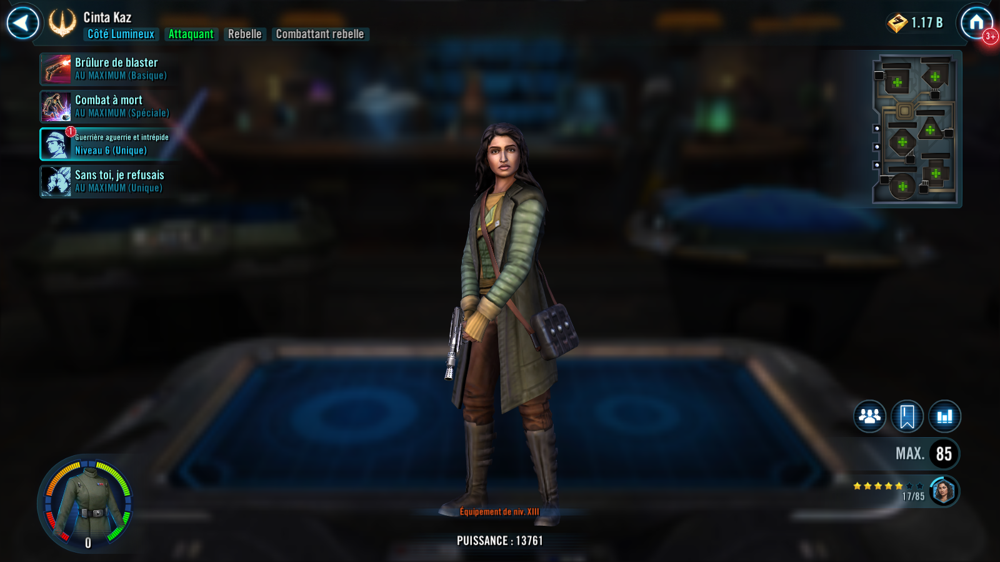

Cinta Kaz
A cold and fearless assassin, highly skilled at breaching enemy defenses
A cold and fearless assassin, highly skilled at breaching enemy defenses

Deal Physical damage to target enemy and inflict Defense Down for 1 turn. If they are Undermined, this Defense Down can't be dispelled.
Cinta Stealths for 1 turn.
Deal Physical damage to target enemy. Cinta Stealths for 2 turns.
Inflict Breach on target enemy for 1 turn. If they are Breached by this ability, Ability Block them for 1 turn. If they are Ability Blocked by this ability, Deathmark them for 1 turn, which can't be dispelled.
This ability can't be resisted by Undermined enemies.
Whenever a Rebel Fighter ally uses a Special ability against an Undermined enemy, Cinta assists.
Whenever Cinta uses an ability while Stealthed on her turn, Expose the target enemy for 2 turns. Whenever Cinta attacks out of turn while Stealthed, her attacks have +100% Critical Chance, and 50% Critical Damage and Defense Penetration.
Whenever a Rebel Fighter ally is damaged by an Undermined enemy, reduce the cooldown of Fight To The Death by 1 (once per turn). Whenever an Undermined enemy inflicts a debuff on a Rebel Fighter ally, Cinta gains Speed Up for 1 turn.
Omicron Boost : While in Territory Wars: At the start of battle, Cinta Stealths for 1 turn.
Cinta has +100% Defense and Max Health. Whenever enemies damage Cinta while she is Stealthed, they are Undermined for 1 turn. If they are already Undermined, inflict Healing Immunity for 1 turn, which can't be dispelled or resisted.
Rebel Fighter allies have +100% Defense Penetration while attacking enemies affected by Cinta's debuffs from Fight To The Death.
Whenever a Deathmarked enemy is defeated, all Rebel Fighter allies recover 100% Health and Protection, gain 10 Speed (stacking, max 50), and Cinta gains 100% Critical Damage for the rest of the battle.
Rebel Fighter allies gain 10% Offense (stacking) for each Undermined enemy. If all enemies are Undermined, Rebel Fighter allies are immune to Instant Defeat and Max Health reduction effects.
Whenever an enemy uses a Special ability, Cinta gains 15% Turn Meter, doubled if that enemy is Undermined.
Whenever a Rebel Fighter ally loses VIP, dispel all debuffs from all Rebel Fighter allies and grant all Rebel Fighter allies 25% Turn Meter.
Whenever Cinta damages an enemy, Cinta and Vel recover 5% Health and Protection, doubled if the enemy is Undermined, and Vel gains a stack of Resilient Defense (max 8) for 2 turns.
If Vel is active, whenever Cinta has her Stealth dispelled, Cinta Stealths and gains 100% Offense for 1 turn.
Cinta gains 10% Turn Meter (once per turn) whenever a Rebel Fighter ally is damaged by a debuffed enemy, and an additional 10% Turn Meter if that ally is Vel.
Whenever a Rebel Fighter ally damages a debuffed enemy out of turn, Cinta dispels all debuffs on herself. If that enemy is Undermined, dispel all debuffs on Vel.